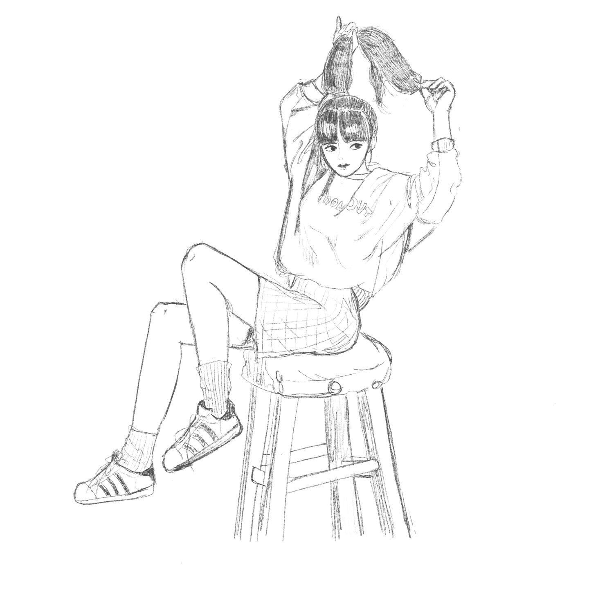
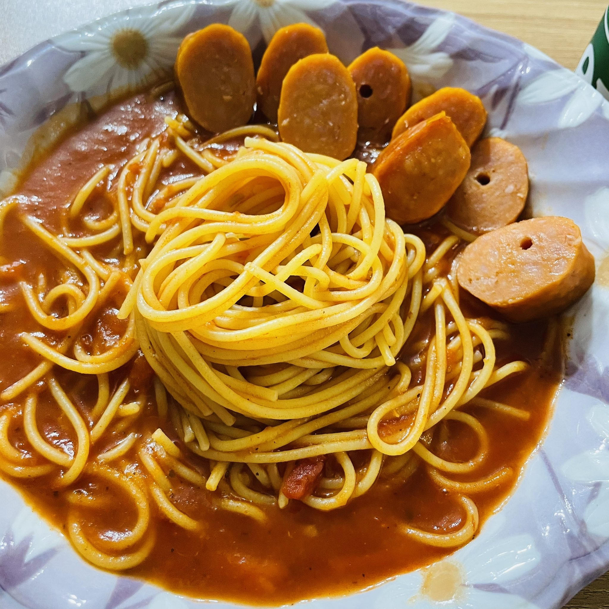

< HOBBY >
bgm : 이웃집 토토로 OST
1. 그림 그리기

사용하는 어플 : 아이패드 프로크리에이트
2. 요리하기

이름 : 파스타
레시피
재료 : 파스타 면, 토마토 소스, 불닭, 토핑(핫바), 치즈, 소금
1. 끓는 물에 소금을 넣고 끓인다.
2. 면을 삶는다.
3. 면수를 조금만 남기고 물을 버린다.
4.토마토 소스를 적당량 넣고 볶는다.
5.불닭소스를 기호에 맞게 넣어 맵기를 조절한다.
6. 핫바를 잘라서 토핑한다.
7. 치즈를 원하는 만큼 뿌려주고 그릇에 담으면 완성!
> Back to Introduce <
> Back to Main <